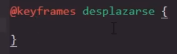
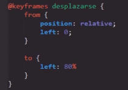
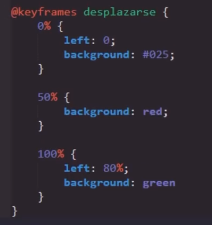
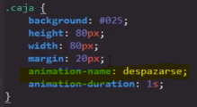
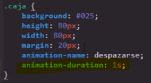
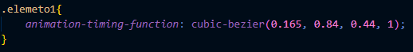
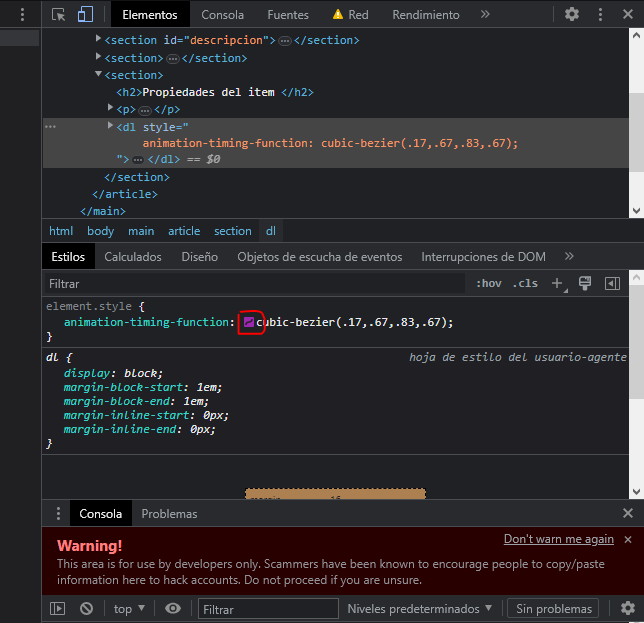
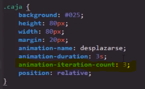
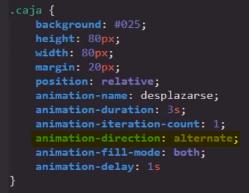
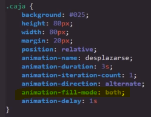

CSS es un lenguaje lo bastate potente como para llegar a crar animaciones, las cuales en si funcionan de una forma similar al de las transiciones, sin embargo cesto solo hasta cierto punto, ya que la creación de animaciones en CSS involucra varios recursos especiales:
@keyframes
-
Se trata del una clase especializada para la creación de las animaciones, dentro de esta es donde se definiran las propiedades de esta, la estructura de esta clase requiere que justo despues de su uso se indique el nombre que se le dara a la animación por crear, luego de este nombre le siguen las llaves ({}) delimitadoras de la propiedad.
Nota: el nombre de la animación es creado por el desarrollador, no son parametros pre-establecidos.
Dentro de esta, las propiedades que se aplicaran en la animación se dibiden dentro de dos propiedades cotenedoras, las cuales son:
-
From: Contiene las propiedades que el elemento poseera cuano se inicie la animación
-
To: Contiene las propiedades que el elemento poseera caundo se finalise la animación
Ejemplo
Porcentajes
From y To no son la unicam forma de estructurar las propiedades de la animación, otra forma de hacerlo es espesifficando uno o más porcentajes de desarrollo, para aplicar alguna propiedad, es decir se pueden usar porcentajes como contenedores de propiedades, que se aplicaran a la animación cuando alcanse ese nivel de desarrollo.
La ventaja de esta tecnica es que podemos aplicar las propiedades en cualquier momento de la animación que se desee, sin tener que limitarse a aplicarlas al principo o al final.
-
Propiedades del item
Se refiere a todas aquellas propiedades que se definiran dentro de la clase del elemento HTML, con el fin de vincular la animación a este y definir su comportamiento.
Animation-name
-
Esta propiedad vincula la animación con el elemento HTML, para hacerlo se utiliza la propiedad animation-name con el nombre de la animación en cuestión dentro de la clase que posee el elemento HTML, en otras palabras para vincular la animación con el elemento HTML se hace una llamado a la animación desde la clase que posea el elemento.
 Animation-duration
-
Esta propiedad unicamete define la duración de la animación, ya que se trata de una propiedad de tiempo acepta segundos como valor
 animation-timing-function
-
Esta propiedad define la forma en la que se llevara a cabo la animación, simplemete modifica el ritmo en la que esta se ejecutara, es decir dependiendo de su valor puede que el ritmo de la animación aumete o disminuya en algun punto de esta, sus valores posibles son:
-
Linear: La animación se desarrolla siempre a la misma velocidad
-
Ease: La animación empieza rapido y su velocidad disminuye a medida que termina
Nota: Este se trata del valor por defecto de la propiedad
-
Ease-in: Esta valor es el opuesto de ease la animación empieza despacio y termina rapido
-
Ease-out Este valor se asemeja mucho a ease pero no llega a alcanzar tanta velocidad, acelera y frena más lentamete
-
Ease-in-out La animación empieza despacio acelera y luego termina despacio
Nota: Esta propieda no modifica el tiempo de duración de la animación, eso es un rol exclusivo de la propiedad animation-duration
Cubic-bezier
Se trata de una valor especial que puede adoptar esta propiedad, su función consiste en utilizar las cordenadas de un cubic-bezier para definir el movimiento y la velocidad que se aplicara en la animación, ya que el cubic-bezier se basa en cordenadas como las den un mapa carteciano, para cada cordenada se nesecita dos datos, un valor del eje X y uno del eje Y, para cada cordenada.
Grafica de un Cubic-bezier

Codigo
La linea que conecta las dos cordenadas representa el desarrollo de la animación mientras que los valores del eje X y el eje Y representan el la cantidad de movimiento que se realiara en ese respectivo eje en ese momento.
Es perfectamte posible el aplicar los valoresde las cordenadas manualmete, sin embargo no es algo recomendable, ya que a la hora de definir adecuadamete el movimiento de la animación, es de gran ayuda apoyarse en una grafica cubic-bezier, para lo cual es mejor recurrir a un generador cubic-bezier, ya que estos se encuentra a plena dispocición en internet, y permiten interactuar con la grafica a medida que se modifican los valores, en este enlase se encuentra un buen generador cubic-bezier.
En las herramientas de desarrollador de google tambien se enceuntra un generador cubic-bezier, para acceder a este es necesario dar "clic derecho", seguido se ingresa en "Inpeccionar elemento", y se procede a buscar los estilos CSS de la paguina, en el recuadro que permite añadir estilos ingresamos "animation-timing-function: cubic-bezier(.17,.67,.83,.67)" para aplicar la propiedad con un valor de ejemplo, junto al valor "cubic-bezier" aparecera un recuadro al clickearlo se extiende el generrador cubic-bezier que nos permite modificar los valores de las cordenadas al amplearlo.
Aplicando este recurso a las animaciones se pueden lograr movimientos mas realias o de revote facilmente, incluso existe librerias completas enfocadas a este recurso.
-
Animation-interation-count
-
Esta propiedad define el numero de repeticiones que ejecutara la animación, debido a su simplicidad esta propiedad acepta cualquier valor numerico entero, sin embargo tambien cuenta con otro valor posible, el valor infinite, el cual indica que la animación se repetira indefinidamete.
 Animation-direction
-
Esta propiedad define la dirección en la que se realiza la animación, sus posibles valores son:
-
Normal: Se trata del valor por defecto, esta orientación desarrolla el proceso de 0% a 100%
-
Reverse: Este valor invierte el sentido normal de la animación, esta orientación desarrolla el proceso de 100% a 0%
-
Alternate: Este valor alterna entre los dos anteriores, es como ir y volver, primero un valor normal y luego reverse, esta orientación desarrolla el proceso de 0% a 100% y luego de 100% a 0%.
Nota: este valor solo surte efecto cuando se realiza más de una repetición, de lo contrario carece de sentido
-
Alternate-reverse: Este valor es lo contrario a alternate, realiza el mismo efecto con la diferencia de que empieza con una dirección reverse y luego una normal, esta orientación desarrolla el proceso de 100% a 0% y luego de 0% a 100%
Nota: este valor solo surte efecto cuando se realiza más de una repetición, de lo contrario carece de sentido
Ejemplo
 -
Animation-fill-mode
-
Esta propiedad define cual va ser el modo final de la animación, cuanta con varios valores posibles:
-
None: Define que la animación culmine en el principio
-
Backwards: Define que el elemento optendra los valores de estilos establecidos por el primer fotograma clave (depende de la direción de la animación) y lo conservara durante el periodo de retraso de la animación
Nota: El uso de esta es muy escaso
-
Forwards: Este valor define que el elemento permasesca con los valores definidos en la ultima instancia, es decir permanecesar con las propiedades definidas por el punto en el que se finalise
-
Both: Este valor define que el elemento inicie con las propiedades que se definan al comienzo de la animación
Ejemplo
 -
Animation-delay
- Esta propiedad configura un retraso en la ejecución de la animación, su función justamente esa demorar un poco el inicio de la animación.
Ejemplo